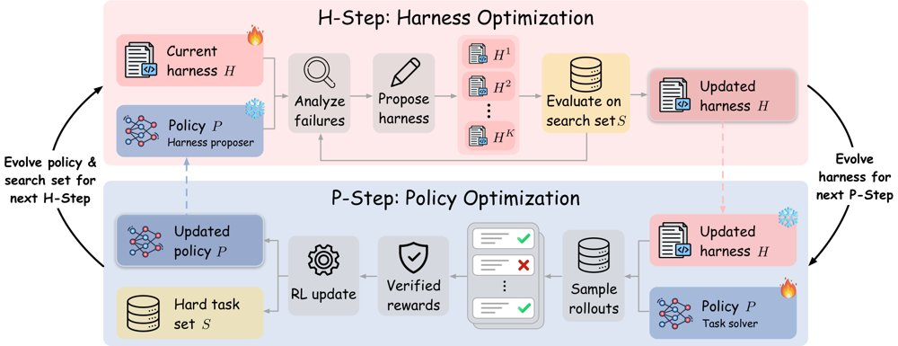
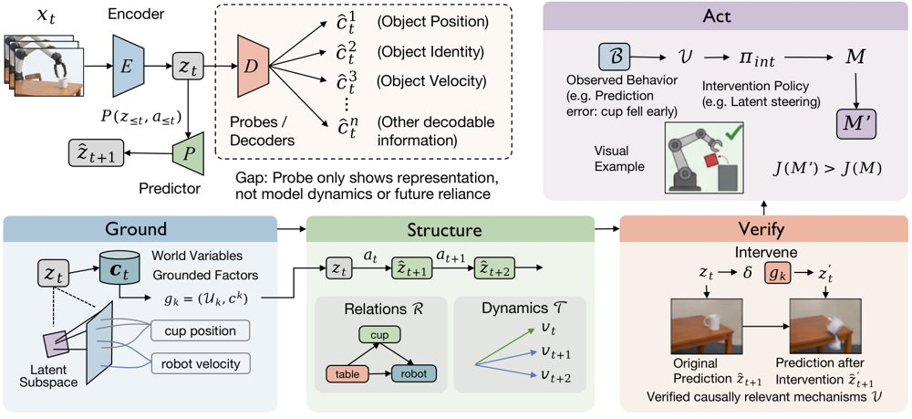
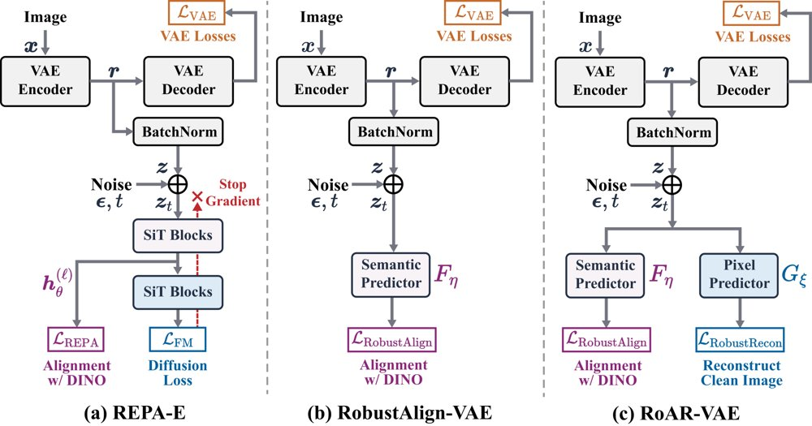
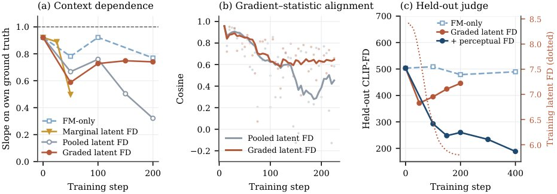
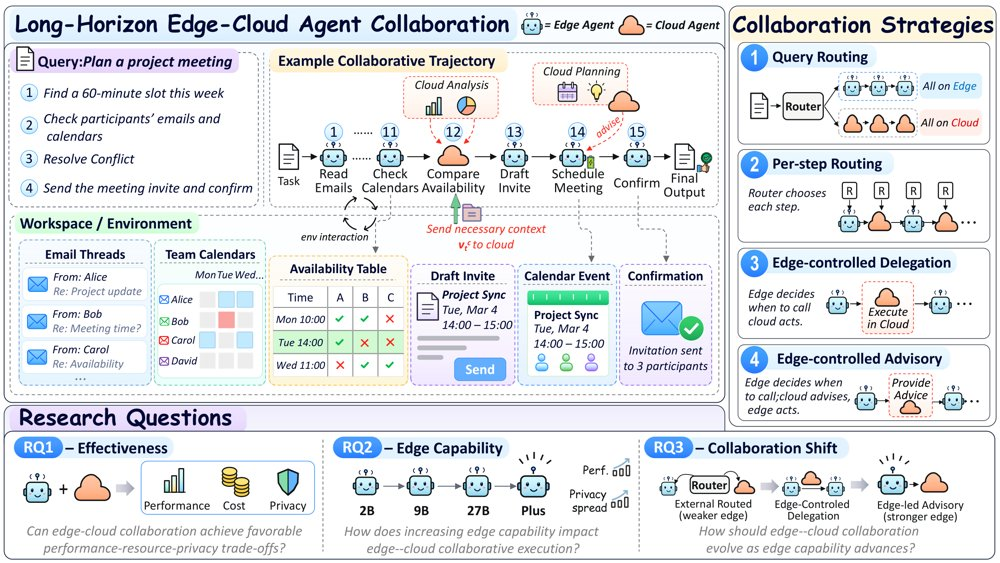
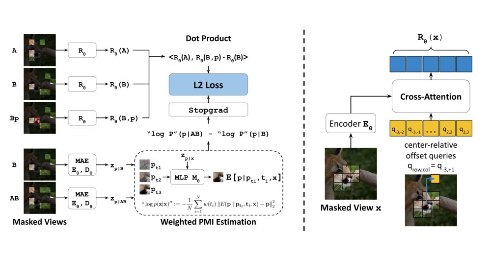

编码智能体让脚手架与策略交替自进化
微软研究提出 Self-HPO，让编码智能体用自身策略提出脚手架修改，并与强化学习交替迭代。

Self-HPO 总览：冻结策略在搜索集上分析失败并提出新脚手架，更新脚手架后策略通过强化学习演化，更新后的策略成为下一轮提议者，未解决任务构成下一轮搜索集。
解决了什么问题。LLM 编码智能体的性能同时取决于策略模型和连接环境的脚手架（harness）。只优化脚手架无法提升底层模型，只训练策略又只能学习固定脚手架诱发的轨迹；已有联合优化多依赖外部提议者，且策略变化后搜索目标会漂移。
方法。Self-HPO 每一轮先固定策略，让当前策略分析自身失败轨迹并提出新的脚手架候选，在搜索集上选出最佳脚手架（H-step）。随后固定该脚手架，用 GRPO 加 BAR 的强化学习更新策略（P-step），并把本轮从未解决的任务作为下一轮搜索集。更新后的策略又成为下一轮的脚手架提议者。
关键结果。在 SWE-Bench Verified 上，Self-HPO 将 Qwen3.5-35B-A3B 的 resolve rate 从 61.0% 提升到 69.5%；三个基准平均从 57.8% 到 64.8%，比 RLVR 高 2.9 个百分点。SWE-Bench Multilingual 和 SWE-Bench Pro 分别达到 59.7% 和 65.2%；改用 Opus 4.8 做外部提议者时，SWE-Bench Verified 达到 71.6%。
为什么值得看。它把脚手架优化从一次性搜索变成与策略共同演化的闭环，为编码智能体的递归自我改进提供了不依赖外部提议者的路径。交叉评估还显示，H2 与 P2 联合带来 8.5 点提升，超过各自单独收益之和 6.9 点。
局限 / 存疑。论文只在 Qwen3.5-35B-A3B 与 mini-SWE-agent 上验证，训练和脚手架搜索仅用 Python 任务。提升也不均匀：Resolved 组 pass@1 下降 2.2 个百分点，案例中的 PR 意图提醒还出现误报。
AI 智能体 Agent / 自主智能
alphaXiv · arXiv
SERA：递归智能体学会自评子任务
SERA 让同一策略在委派前写评分标准，并用验证结果训练评分生成，在两个文本环境中超过递归智能体基线 RAO。

基于评分标准的递归智能体优化：共享策略的根智能体递归委派子任务，每个完成的子智能体轨迹可获得评分标准奖励以及程序或 LLM 裁判奖励。
解决了什么问题。递归语言模型智能体把任务拆成子任务并交给同一策略的子实例，最终结果可验证，但中间子任务没有真值。现有方法用验证器或裁判逐节点打分，既昂贵又粗粒度，还没有直接评价任务分解质量。
方法。SERA 在父智能体委派前生成一组带权重的自然语言评分标准，并在子轨迹产生前冻结；子任务完成后由同一策略按标准打分，作为连续执行奖励。评分生成则用反事实 rollout 的已验证成败做排序训练，另设叶子覆盖率奖励直接训练分解，三个目标在共享策略上交替更新。训练好的评分标准还在推理时用于树搜索的候选选择。
关键结果。在 TextCraft-Synth 上，SERA 平均成功率 74.31%，比 RAO 高 5.38 个百分点；在 TextWorld-Sync 上平均 65.07%，高 13.14 个百分点。推理时用学习到的评分标准做树搜索，在 TextWorld-Sync 再提升 2.43 个百分点。外部 LLM 裁判调用从 147.80K 降到 35.79K，输入 token 从 633.80M 降到 125.32M。
为什么值得看。把评估能力训练进同一策略，不只是加一个外部裁判，而是让评判子任务的能力反过来改善求解，并把学到的评分标准复用为推理时选择器。它也为递归智能体减少对外部监督的依赖提供了一条可操作的路径。
局限 / 存疑。论文只在 Qwen3-4B 和两个合成文本基准上验证，向更大模型和真实任务的外推尚未测试；自评可能被偏离真实成功的分数钻空子，且评分训练仍依赖已验证结果锚定。叶子覆盖率奖励对所有叶子等权，子任务重要性加权尚未处理。
AI 智能体 Agent / 自主智能
alphaXiv · arXiv
JEPA 可解释性：从解码表征到理解潜在世界
观点文章提出 Ground–Structure–Verify–Act 四阶段蓝图，主张 JEPA 可解释性应从「能解码什

从解码表征到理解潜在世界：Ground 将潜在因子对应到可解释的世界变量，Structure 恢复它们的关系与学到的动力学，Verify 通过受控潜空间干预检验其因果作用，Act 再据此诊断失败并定向改进模型行为。
解决了什么问题。JEPA 直接在抽象表征空间里做预测，天生没有面向人类的可解释接口；当一个预测出错时，很难判断问题出在状态表征、学到的动力学、缺失的交互，还是多步 rollout 中累积的漂移。现有的表征可解释性方法（线性或非线性探针、概念探针、聚类、稀疏自编码器等）只能说明某个世界变量可以从潜在状态中解码出来，却不能说明这个变量如何与其他变量关联、如何塑造潜在动力学，以及预测器是否真的依赖它。
方法。作者把 JEPA 形式化为编码器 E 与预测器 P 组成的潜在预测世界模型，并区分「表征可及性」与「世界模型理解」：前者关心能从潜在状态中恢复什么信息，后者关心这些信息如何组织、演化并因果地参与预测。据此提出四阶段蓝图：Ground 把潜在因子或子空间对应到可解释的世界变量；Structure 恢复这些因子之间的关系与演化（动作条件下还包括动作如何影响演化）；Verify 通过受控的潜空间干预检验这些机制是否真的被预测器因果依赖；Act 则用已验证的机制诊断失败并通过潜空间引导、激活编辑、重训练等方式改进模型。作者进一步把 V-JEPA 2 probing、AIM probing、WorldModelLens、WAM Steering 等少量工作映射到这一框架上。
关键结果。这是一篇观点文章，论文未给出具体数字，也没有报告任何实验。其文献梳理显示：表 1 仅列出 4 项与潜在世界可解释性直接相关的工作，其中 JEPA 内部的直接证据主要停留在 Ground 阶段（如 V-JEPA 2 的探针显示冻结表征含有外观、运动与动作信息），唯一在 Act 阶段被标为完整覆盖的是非 JEPA 设定的 World Action Models 工作。作者还以机器人操作、3D 定位、医疗、科学发现 4 个应用域说明潜在世界随领域而异，并提出 4 项研究优先级（可控测试床与评价标准、潜在世界如何随训练涌现、把解释与模型行为和设计挂钩、把分析扩展到真实视频与具身智能体）。
为什么值得看。如果能把预测失败定位到状态、动力学、交互或 rollout 中的某一环，并区分模型依赖的是可迁移的世界结构还是训练分布内的捷径，可解释性就能在规划与控制之前提供可信度信号，而不只是事后解释。
局限 / 存疑。作者自己承认：人定义的位置、速度、接触等概念未必是 JEPA 内部使用的本体，其表征可能是分布式、非线性或任务相关的；潜空间干预也未必合法，改动一个因子常会连带改变其他属性，甚至得到不对应任何真实世界状态的潜状态。此外论文明确表示，可解释性并非构建可靠世界模型的必要条件，应与行为评估、不确定性估计和分布外测试互补；而且作为没有实验的观点文章，Structure、Verify、Act 三个阶段在 JEPA 上基本尚无实证支撑。
模型可解释性、模型内部机制
alphaXiv · arXiv
RSIFlow：让元智能体自进化地编排自改进流程
北航等提出 RSIFlow，让元智能体依据执行反馈诊断任务智能体的瓶颈、选择改进流程，并把编排经验写回自身的元框架。

RSIFlow 总览：(A) 定义任务域与智能体工作流；(B) 任务智能体执行任务并收集轨迹与反馈；(C) 元智能体检索技能、自适应编排工作流；(D) 工作流结果被蒸馏为技能、原则与元框架，更新后的元框架指导后续编排，闭合递归自改进回路。
解决了什么问题。现有智能体自改进方法多沿模型参数、执行框架（harness）或可执行产物三条路线优化，递归自改进（RSI）进一步把改进机制本身也纳入优化范围。但性能瓶颈会随任务要求和智能体能力状态而变化，一次成功的更新就可能改变后续瓶颈，因此「如何让改进流程适配当前瓶颈、同时让编排能力随经验变强」仍未被解决。作者把这一耦合问题定义为动态工作流适配。
方法。RSIFlow 把系统状态写成任务智能体与元智能体的联合状态：任务智能体含模型参数、执行框架与任务产物，元智能体则固定基础模型参数、只演化其元框架（Action、Skill、Planning）。每轮元智能体读取执行轨迹与环境反馈，诊断瓶颈后从 Model、Harness、Artifacts 三类改进流程中择一，在与父代相同的训练批次上评估候选，接受首个有效且增益为正的候选。随后它把成功与失败的经验蒸馏为组件级技能和跨组件原则，经 Add、Supplement、Revise、Merge 四种证据驱动操作维护技能库，并据此改写元框架的动作接口与调用流程，形成递归闭环。
关键结果。在 6 个基准、Qwen3-4B 与 Qwen3-8B 两个骨干上，RSIFlow 在 12 个基准—骨干组合中的 11 个取得最优；总体分数为 51.21%（4B）与 59.86%（8B），分别比最强基线高 6.06% 与 3.86%，逐指标平均领先 3.11%。单点最大提升出现在 HumanEval+，4B 上 pass@1 提升 14.02%；MBPP+ 跨骨干平均提升 3.91%；2Wiki 的 F1 跨骨干平均提升 5.20%，HotpotQA 在 8B 上提升 6.38%。消融显示，相对 Vanilla，Code、Tool Use、SearchQA 分别提升 19.04%、3.92%、18.20%，三域平均提升 13.72%；关掉元智能体演化会使平均性能下降 5.74%。五轮案例分析给出 Harness–Harness–Model–Model–Artifacts 路径，分数从 32.23% 升至 51.21%（总体 +18.98%），其中 R3、R4 分别使用 3,798 与 5,397 次 replay 调用。
为什么值得看。它把「选哪条改进路线」和「如何把路线选得更好」放进同一个反馈回路，为智能体自改进提供了一个可复用的编排层，而不只是又一个固定的训练或提示搜索流程。
局限 / 存疑。实验只覆盖 Qwen3-4B 与 Qwen3-8B 两个任务骨干，作者自述在更大模型和集群规模上是否有同样收益尚未验证；元智能体演化带来额外算力开销，换成更便宜的元智能体可能削弱增益，且经验驱动的元框架更新稳定性仍待研究。案例研究也只是展示技能复用，作者明确表示未隔离单个技能的因果贡献。
AI 智能体 Agent / 自主智能
alphaXiv · arXiv
LLM运筹智能体：可行性88.39%，质量逊专家
新基准OR-License用31个真实运筹项目评估LLM智能体，最强配置可行性88.39%、DAQ 0.87，仍低于专家

评估框架：专家从真实运筹项目中整理任务与参考解，智能体可在求解中查询，最终提交接受可行性与相对专家解质量的隐藏评估。
解决了什么问题。现有运筹基准通常从自包含的问题描述或预定义优化任务开始，较少覆盖把原始商业材料转化为经专业验证方案的过程。论文要问：LLM智能体能否不经专家预先重构，直接从客户原始材料给出专家级运筹方案？
方法。作者构建OR-License端到端基准，含来自10个工业场景、付费运筹项目总值368万美元的31个实例，并在去标识化后保留原始需求、输入数据、交付格式和信息边界。配套ORSim作为受控客户模拟器，只披露业务事实而不提供运筹专业答案；隐藏评估检验可行性，并将目标质量与客户已接受的原始专家解比较，DAQ对不可行交付记零。
关键结果。在11个前沿LLM中，部分模型的条件目标质量超过专家参考，但没有模型在部署调整质量DAQ上匹配专家；最强的主Claude Code配置达到88.39%严格可行性和0.87的DAQ，专家参考为1。可评估任务上，不同模型的任务均衡研究链完成率为24%到45%。
为什么值得看。它把评估从解现成优化题推进到处理真实客户材料、信息缺口和交付可行性，更贴近运筹智能体的实际部署。
局限 / 存疑。基准只有31个实例、10个场景，规模仍小；信息获取由ORSim模拟，论文未给出真实客户部署中的量化验证。
AI 智能体 Agent / 自主智能
alphaXiv · arXiv
MT Forcing：用单轮教师稳定多轮图像编辑
研究者提出 MT Forcing，用单轮分布匹配蒸馏和教师强制引导，缓解多轮图像编辑的画质漂移与内容不一致。

MT Forcing 总览：单轮 DMD 将学生自回归 rollout 的每轮输出分布对齐到单轮教师，教师强制引导在参考轨迹上监督历史依赖转移，整体训练先做教师强制 warmup，再进行带教师强制正则的 DMD。
解决了什么问题。多轮图像编辑要求模型按连续指令修改图像，但现有方法在几轮后出现两类漂移：视觉质量不稳定，伪影累积、细节退化；内容不一致，未要求区域被改动、先前编辑丢失。作者将原因归结为 exposure bias——训练时条件于参考历史，推理时却递归条件于自身不完美输出。
方法。Single-Turn DMD 把截至当前轮的所有指令重组为一个 bundled prompt，让冻结的单轮教师直接从源图完成累计编辑，并用 DMD 损失把学生自回归 rollout 的每轮输出分布对齐到该教师分布，避免教师监督本身递归累积误差。Teacher-Forcing Guidance 则在参考轨迹上用 flow matching 监督依赖历史的转移，先做 warmup，蒸馏时再以较低权重作为正则项。整体目标为 L_DMD + λ_TF L_TF。
关键结果。在 MTEdit-Bench step-wise 子集（100 个 session、每个 8 条指令）上，SenseNova-U1 第 8 轮 IF/CC 分别提升 7.45 和 6.82；SenseNova-U1.5 第 8 轮 IF/CC 提升 4.65 和 4.46。SenseNova-U1.5 的 DRS 全程维持在 4.20–4.35，基线从 4.09 降到 3.03；八轮平均 Pixel 从 6.34 降到 0.74，降幅 88.4%。消融中完整方法取得 9.66 IF、8.40 CC、4.30 DRS、0.74 Pixel，优于仅 DMD 的 9.02/7.64/4.12/2.51、仅 Teacher-Forcing Guidance 的 9.10/7.83/3.92/2.74 和无组件基线 8.47/7.09/3.83/6.34。需注意 SenseNova-U1.5 在第 1–3 轮的 IF/CC 并非全部提升（第 1 轮 IF 9.90→9.74、CC 9.49→8.82），从第 4 轮起四项指标才全面优于基线。
为什么值得看。多轮编辑是交互式视觉创作的关键形态，而训练-推理历史不匹配是自回归统一多模态模型的共性问题。MT Forcing 在缺少能联合生成完整编辑轨迹的双向教师时，给出了一套可操作的分布匹配加参考监督方案。
局限 / 存疑。实验仅在 MTEdit-Bench 的 step-wise 子集和 SenseNova-U1/U1.5 上验证，且主要是同一编辑器有无 MT Forcing 的对比，未与 MT-OPSD 等其他多轮方法横向比较；SenseNova-U1.5 早期轮次 IF/CC 还出现下降。单轮教师自身会产生跨轮内容不一致（论文图 4 的茶壶花纹变化），bundled prompt 由学生条件到教师条件的映射不可逆，λ_TF 取 1 或 0.5 时还会带来可见模糊，这些都需要额外权衡。
生成式 AI
alphaXiv · arXiv
RoAR-VAE：让潜变量在损坏后仍可预测
研究者简化 REPA-E，仅用损坏潜变量的语义预测加图像重建，得到 RoAR-VAE，生成均分超最强基线 2.19 分。

从 REPA-E 到 RoAR：(a) REPA-E 联合训练 tokenizer 与扩散模型，但只有语义对齐经损坏潜变量回传到编码器；(b) RobustAlign-VAE 剥离扩散目标及其专用模块，只留这条语义预测通路；(c) RoAR 再加入 RobustRecon，在潜变量损坏下同时预测语义特征与干净图像，并与干净潜变量上的标准 VAE 目标并存。
解决了什么问题。视觉 tokenizer 既要保证重建保真度，又要让下游扩散模型容易学习，这两者常常冲突：潜变量容量大、细节多，反而更难被扩散模型建模。此前 REPA-E 通过联合训练 tokenizer 与扩散模型、并用语义对齐监督编码器来提升「可扩散性」，但它的流匹配损失并不回传到编码器，因此究竟是联合训练还是语义预测在起作用并不清楚。
方法。作者先做消融：去掉 REPA-E 的扩散目标和专用生成模块，只保留「从损坏潜变量预测 DINOv2 语义特征」这一条通路，得到 RobustAlign，其下游生成性能与 REPA-E 相当，说明语义预测本身已足够。在此基础上，他们提出 RobustRecon，用一个独立辅助解码器从损坏潜变量重建干净图像，以补回语义特征欠表达的空间与外观细节。两者与标准 VAE 目标相加构成 RoAR-VAE，辅助目标均通过损坏潜变量向编码器回传梯度。
关键结果。在 ImageNet 256² 上，RoAR-VAE 取得 32.88 dB PSNR、0.0349 LPIPS、0.1309 rFID 和 0.9258 SSIM；冻结 tokenizer、用同一 0.8B MMDiT 骨干训练 32k 步后，GenEval、GenEval2、DPG-Bench 分别为 62.22、51.79、77.56，均分 63.86，比最强基线 tokenizer（REPA-E-FLUX 的 61.45）高 2.19 分。TokBench 上小尺寸文字识别准确率为 69.00%，比 FLUX.1-VAE 的 52.07% 高 16.93 个百分点，小尺寸人脸相似度从 0.53 提升到 0.65。消融显示，去掉潜变量损坏后均分从 63.86 降到 58.47，把语义预测器换成简单 MLP 则降到 52.70。
为什么值得看。它把「可扩散性」的来源从昂贵的端到端联合训练，归结为一个简单、可缓存潜变量的辅助预测目标，tokenizer 训练不再需要同时挂一个完整扩散模型。这对需要大规模预训练潜变量的工作是一个成本更低的替代路径。
局限 / 存疑。所有 tokenizer 都只在 ImageNet 256² 上训练，下游评测也固定在同一分辨率、32k 步预算和单一 0.8B 骨干上，未验证更大数据与更高分辨率下的表现；作者用高斯损坏下高方差方向信噪比更高、且扩散模型更早学习这些模态来解释增益，但这只是与已有谱偏置理论相吻合的推测，论文未给出直接验证。此外 FLUX.2-VAE 因训练数据与配方未公开被排除在基线对比之外，损坏程度采样的超参也未做系统搜索。
生成式 AI
计算机视觉 CV
alphaXiv · arXiv
用网络第一视角视频预训练导航策略
ScaleNav先用无动作标签的网络自我中心视频做指令条件视频预训练，再用仿真动作数据对齐，在两项导航基准和真机四足机器

ScaleNav总览：先从网络自我中心视频做无动作视频预训练获得导航先验，再用带动作标签的仿真数据完成动作对齐与联合微调，联合预测未来观测与动作块以跟随导航指令，右图为在真实四足机器人上的部署。
解决了什么问题。语言条件局部导航要求机器人走到初始视野中文字指定的目标并停下，端到端策略需要跨场景的多样数据才能泛化。真机动作数据采集成本高，仿真数据又存在sim-to-real差距，而网络自我中心视频虽覆盖多样真实场景，却缺少机器人动作标签。已有方法从这些视频中提取轨迹、几何目标或潜在动作作为中间监督，提取误差会传导到后续策略学习。
方法。作者提出ScaleNav：共享Diffusion Transformer主干的世界-动作模型同时预测未来观测与动作块，并在导航时以初始帧锚点和最近两个块构成的滑动窗口作为历史条件。训练分三阶段：先在有导航指令的约18.2K段网络自我中心视频上继续预训练Wan2.2-TI2V-5B（无动作token），再用约2.6K条、来自650个场景的动作标注仿真episode做动作对齐（仅训练动作嵌入MLP、动作头与自注意力层），最后解冻其余DiT模块联合微调。动作对齐与联合微调阶段还以一定概率重放网络视频，只用视频损失。
关键结果。在单视图改编的Short-Horizon OVON（524条episode、36个HM3D场景）上成功率为86.5%、SPL 71.3%，在自建的HabitatGS-LN（157条episode、45个场景）上为94.9%、SPL 86.1%，均高于NavDP、ApexNav、StreamVLN与Uni-NaVid等基线；RTX 4090上每个执行动作的摊销推理延迟为76 ms。与不使用网络视频的变体相比，成功率分别提升5.3和4.5个百分点。真机在Unitree Go2上于三个室内环境共60次试验，总体成功率83.3%，高于不用网络视频变体的65.0%、Uni-NaVid的51.7%和StreamVLN的41.7%。
为什么值得看。它提供了一条不依赖中间动作目标或推理时外部规划器的路线，把网络人类导航视频中的视觉动态先验直接转化为可执行动作块，说明网络视频可以作为机器人导航的可扩展数据来源。
局限 / 存疑。定量评测只覆盖室内、初始视野中可见的物体目标，室外环境和区域级目标的泛化尚未评估；单视图OVON改编结果与原三视图协议不可直接比较。消融中跳过动作对齐或去掉视频重放只使SR从94.9%降到93.6%和94.3%，增益有限；而用Depth Anything 3估计位姿生成伪动作反而降到73.9%，说明这类视频的动作监督仍受位姿噪声影响。
机器人 & 具身智能
alphaXiv · arXiv
无教师微调让世界模型稳定生成超4000帧
无需教师模型与长视频，用381帧片段微调最多36 GPU小时，把流式世界模型的稳定生成从253帧延长到4000帧以上。

自由 rollout 上分布匹配的训练动态：(a) 帧 765–933 的上下文依赖回归斜率，(b) 均值匹配修正与所需方向之间的余弦相似度，(c) 留出 CLIP-FD 随训练步数的变化，其中训练 latent FD 持续下降而留出 CLIP-FD 反而上升。
解决了什么问题。流式视频世界模型按块自回归生成，预测误差会回流进上下文并不断累积，所以 rollout 一旦超出训练片段长度就开始漂移、变暗甚至退化为纹理。常用的分布匹配蒸馏（DMD）补救方法在动作条件世界模型上受教师模型限制：外部视频模型不理解动作，模型自身的预训练网络又会和学生一样漂移，实验中这两类教师都没有带来提升。无教师的自历史或反转方法只能监督那些能与真实帧配对的状态，rollout 数千帧后到达的状态从未被直接监督。
方法。Fréchet Forcing 直接在部署采样器产生的自由 rollout 上做分布匹配，用三项约束联合微调模型与采样器：生成锚定在自生成历史上（但把历史的最后一个 chunk 换回真实块）施加 flow-matching 损失，以保住动作条件生成能力；上下文保真在每个片段自身真值中心化的 latent 统计上计算 Fréchet 距离，并且只对携带梯度的尾部 K=8 个 chunk 打分；现实匹配在冻结的 DINOv2 特征空间上计算与真实帧特征之间的 FD。两个分布项用指数滑动平均维护一阶与二阶矩，把有效样本量与 batch size 解耦，使单卡 batch 为 1 时 FD 仍可微，梯度只从最后几个采样步反传。
关键结果。在 MiniWorld-1B（253帧片段预训练）上，用381帧片段微调225步、最多36 GPU小时（DROID 34、Sekai 36，8卡）。DROID 上对前后向回合回放真值的 PSNR 在帧 2,997–4,001 区间仍有 21.5 dB，基线为 8.9 dB；同一区间 CLIP-FD 为 44 对 431、FVD 为 81 对 2,058（约 25 倍）。Sekai 最终 bin 的 CLIP-FD 为 226 对 609、FVD 为 441 对 1,193（2.7 倍），亮度维持在真值的 0.92–1.07。96 条 4,001 帧 DROID rollout 的人工检查显示，79% 到第 4,000 帧仍无可见伪影，而基线在 8 条抽检 rollout 中第 3,000 帧已被网格伪影大面积覆盖。消融还显示，单纯微调 flow matching 在 DROID 最终 bin 的 CLIP-FD 为 401，与基线的 431 接近。
为什么值得看。它说明长时程世界模型可以只靠短片段和真实数据统计来训练，既不需要教师模型、在线 critic，也不需要长录制视频，训练片段长度不再是可用 rollout 时长的硬约束。文中的诊断（上下文解耦、梯度与统计错位、特征空间被钻空子）也给后续长时程生成训练提供了可复用的检查手段。
局限 / 存疑。动作跟随只被部分保住：转向角仅达到指令角度的 49%–60%；感知特征空间偏粗，一些亮 rollout 的细尺度周期纹理未被任何指标捕捉。分布项是总体层面、且只覆盖单次 317 帧训练 rollout 内到达的状态，Sekai 上 FVD 仍从 186 缓升到 441，约 20% 的 DROID rollout 到第 4,000 帧出现局部伪影；此外 DROID 真值是回合回放而非连续录制，评测片段属于预训练数据，实验仅覆盖两个域、单一模型规模。
生成式 AI
alphaXiv · arXiv
解耦场景结构表征，让自监督深度估计跨域可扩展
同济大学提出 MaSS：把上下文与结构表征解耦，用深度直方图构造对比目标，首次让自监督深度模型从混合域训练中获益。

MaSS 框架总览：深度编码器与冻结的预训练 VFM 经双向交互模块交换信息，再由一对锚定—解耦投影器分别输出无塌缩的上下文表征与结构表征，结构分支通过判别场景结构学到可迁移的布局表示。
解决了什么问题。自监督单目深度估计理论上能随无标注数据扩展，但现有方法各自在单一数据集上训练，一旦混合室内、室外、动态与恶劣天气数据共同训练，性能反而不如单数据集训练。作者发现根源在于：自监督信号的噪声使模型倾向于编码数据集特定的结构偏置，深度编码器最粗层的高层特征反映的是数据集偏置而非前景背景关系与透视几何，不同域的偏置要求相互冲突，就造成跨域优化冲突。
方法。MaSS 用双向交互模块（借鉴 ViT-Adapter）把可训练的传统深度编码器与冻结的 DINOv2 ViT-B/14 桥接，再由一对「锚定—解耦」投影器分别输出上下文表征与结构表征：前者以 VFM 的样本间语义关系为锚，后者被约束为与前者正交。结构分支用预测深度下采样 8 倍后的软直方图（20 个 bin）计算对称 KL 散度，作为场景布局相似度，并以此构造多正样本 InfoNCE 目标，正样本相似度阈值取 0.95、对比温度 0.1。两路特征金字塔拼接后送入深度解码器。
关键结果。在四个训练评测数据集单数据集训练下，MaSS 的 Abs Rel、δ1 分别为 KITTI 0.094/0.909、DDAD 0.128/0.845、NYUv2 0.109/0.868、nuScenes 0.139/0.851，均优于表中此前方法。混合域训练（MaSS†）进一步提升到 0.092/0.913、0.125/0.862、0.104/0.890、0.134/0.852，而对比方法混合训练后普遍下降。八个零样本数据集上，Waymo 0.123/0.867、DrivingStereo 0.100/0.905、Cityscapes 0.103/0.896、iBims-1 0.107/0.883、SUN-RGBD 0.127/0.893、7-Scenes 0.120/0.861、DIML 0.104/0.890、DIODE 0.289/0.736。模型 93.2M 参数、81.6G FLOPs、训练数据 150K；加入 50K TartanAir 样本扩到 200K 后，训练域 Abs Rel 平均变化 +1.5%、δ1 +0.2%，更具挑战的 DIML 与 DIODE 上 +4.3% 与 +3.0%。
为什么值得看。这是首个报告自监督深度模型能随训练数据多样性增加而稳定获益的工作，且在 DIML、DIODE 等分布外场景上接近部分监督深度基础模型的水平，同时只用 150K 训练样本和单卡 RTX 4090、约 2.5 天即可完成训练。它提示「显式建模场景结构」比单纯换更强的预训练骨干更关键，在消融中换成 DINOv3 只带来边际变化。
局限 / 存疑。在标准室内数据集上仍明显落后于监督深度基础模型（iBims-1 上 DA V2 为 0.045，MaSS 为 0.107），作者归因于这些数据深度分布简单同质且已在监督模型训练集中。可扩展性证据也偏初步：200K 训练规模远小于 Depth Anything 系列的 62M 量级，且方法需先跑一个 epoch 初始化才能启用结构对比目标；另外部分与 DA V2、KBR 系列的对比受 Median 与逆深度域 LSQ* 对齐方式差异影响，直接比较并不完全对等。
计算机视觉 CV
alphaXiv · arXiv
长任务智能体的边缘云协作：128项任务系统评测
新基准EC2-Bench用128个可执行工作区任务，从完成度、云端开销与隐私暴露三方面，评测长周期智能体的边云协作。

EC2-Bench中的长周期智能体边云协作概览：一个典型工作流、四种云端参与方式，以及关于协作有效性、边缘能力影响与协作方式随边缘变强如何演化的三个研究问题。
解决了什么问题。现有边缘云协作研究多把协作当成单次查询的路由或升级决策，而长周期智能体执行中云端参与会在轨迹中反复穿插，产生轨迹级依赖：一次调用会影响后续步骤、累积资源开销，并决定多少敏感信息离开本地。这类轨迹级效应此前缺少系统评测，已有基准如RouterBench、LLMSwitchBench、M4A1也主要考察单查询或多轮对话的路由质量与成本。
方法。作者构建EC2-Bench，从六个可执行智能体基准中收集并统一到同一运行时与评测接口，再按'两端点都能解或都不能解则剔除'的难度过滤，得到128个任务，其中100个带有细粒度敏感性标注（共3385个敏感信息单元，分12类）。评测覆盖任务完成度与Pass^3、云端token与费用、边缘FLOPs，以及轨迹中暴露给云端的敏感单元比例；协作方式分四种：查询级路由、逐步路由、边缘自主委托云端执行、边缘自主请求云端建议，边缘模型取Qwen3.5-2B/9B/27B与Qwen3.7-Plus，云端主模型为GLM-5.3。
关键结果。云端单干（GLM-5.3）完成度82.70、云端费用56.42美元、隐私暴露87.01%；边缘单干Qwen3.5-2B仅12.75。以2B为边缘模型时，逐步路由把完成度从12.75提到39.97，云端费用仅为云端单干的22.7%。随边缘变强，最佳协作配置从39.97%（2B）升至76.84%（Qwen3.7-Plus），逼近云端单干的82.70%；各协作策略间的完成度差距从25.22%（2B）收窄到3.67%（Qwen3.7-Plus），但同期隐私暴露差距仍达66.23%。2B时逐步路由39.97%远高于边缘自主委托的15.86%，边缘变强后这一格局反转。边缘自主委托相对同等调用率的随机调用，2B仅高1.2%，更强边缘模型高3.0–4.4%；对2B做指令跟随训练后，固定云端建议设置下的完成度从24.8%升到28.8%（600步）。隐私暴露检测器对200个人工裁决样本的F1为96.9%。
为什么值得看。它把边云协作从'单次路由准确率'推进到长周期智能体的轨迹级评测，指出边缘模型该优化的不只是单机能力，还有'何时叫云端'和'听懂云端建议'这两种协作能力。对端侧智能体的模型设计与部署策略来说，这是可复用的评测口径。
局限 / 存疑。主实验只用一个云端模型GLM-5.3（附录用DeepSeek-V4.1-Flash复验趋势一致），Qwen3.5-27B与Qwen3.7-Plus只是'未来边缘模型'的代理，并非真实端侧部署；边缘开销用参数估算FLOPs，未测真实时延与能耗；隐私暴露只在100个标注任务上由LLM裁判判定。任务集经过'两端点都能解/都不能解即剔除'的过滤，天然偏向能区分协作方式的场景，绝对完成度不宜外推到一般智能体负载。
AI 智能体 Agent / 自主智能
AI 工程、推理部署、系统方向
alphaXiv · arXiv
RePR：用生成模型估计PMI监督表征
RePR用扩散模型估计加权PMI监督图像块表征，ImageNet上FID-50K达2.18。

RePR架构：左侧预测模型用MAR与扩散MLP头估计目标patch的加权似然，右侧表征模型输出patch特征并因子化加权PMI。
解决了什么问题。现有表征学习多面向判别任务，容易出现特征抑制；DINO、LeJEPA在带水印数据上会只编码水印而崩溃。用于生成的tokenizer编码器是否可扩展、以及「先学表征再生成」总算力是否优于像素扩散，仍缺乏清晰答案。
方法。RePR让预测模型（MAR/MAE编码器+扩散MLP头）估计条件与非条件去噪损失之差，得到加权PMI；表征模型则用patch特征点积去因子化该PMI。为处理高维图像，作者引入时间步加权、将大目标拆成增量patch的bootstrapped PMI，并用相对位置交叉注意力保持空间等变。训练时联合优化两个模型，表征模型每4次迭代才更新一次。
关键结果。在ImageNet上，RePR+JiT-L取得FID-50K 2.18；在1.19×10^20 FLOPs预算下，相比JiT-L像素扩散，无引导FID-10K在条件生成降2.61、无条件生成降4.18。作者还报告tokenizer编码器scaling law：外推显示达到DINOv2水平约需1/7训练FLOPs、达到WebSSL水平约需1/8。用RAE的GAN+LPIPS解码设置时，RePR-173M Iter3的FID-50k为11.13，优于IJEPA-H的12.46和MoCoV3-B的13.84；重建PSNR为21.72 dB，DINOv2-B为18.09 dB。
为什么值得看。若成立，这给出了除放大生成模型之外的又一条scaling轴：把tokenizer编码器本身当作可扩展组件，并按编码器+生成器总FLOPs做预算。它也为「生成式表征学习」提供了可检验的PMI理论框架。
局限 / 存疑。论文的scaling外推最多只超出实测对数FLOP范围1倍，且ImageNet上width-1024模型在200 epoch后开始过拟合；PMI由扩散VLB估计，只有去噪器最优时才精确，并依赖32步Monte Carlo近似。RAE对比中的GAN+LPIPS解码器还依赖外部模型，其中DINOv1/8预训练GAN使用4.7×10^20 FLOPs，超过作者训练的任何模型。
alphaXiv · arXiv
期刊
Nature Machine Intelligence · Towards understanding and monitorability of reasoning LLMs
《Nature Machine Intelligence》在线发表了一篇关于推理大模型可理解性与可监控性的研究。作者指出，前沿大模型虽然会用人类可读的语言逐步生成推理文本，但这些推理 token 并不构成对其内部计算的准确解释。这一落差给模型的可监控性带来了挑战。
Nature · Three reasons why AI is not conscious and perhaps never will be
《Nature》这篇评论指出大语言模型虽能以逼真的方式模仿思考与情感，但神经科学证据表明智能本身并不足以产生主观体验。作者据此给出三点理由说明当前 AI 并不具备意识、甚至可能永远不会具备，并提示研究生在讨论「模型能力」时区分行为层面的模仿与现象学意义上的意识。